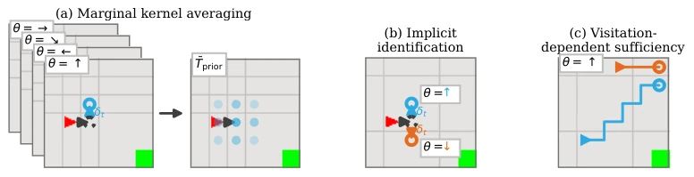
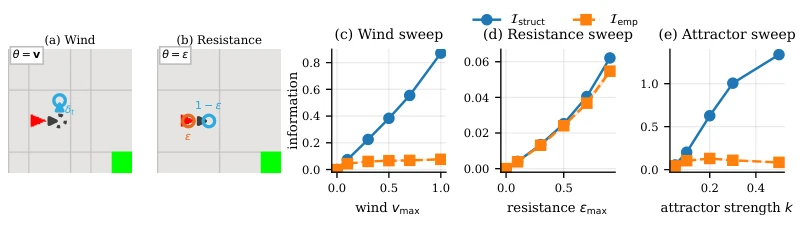
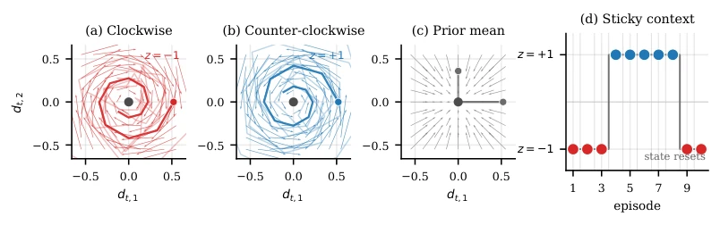
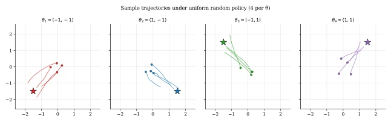
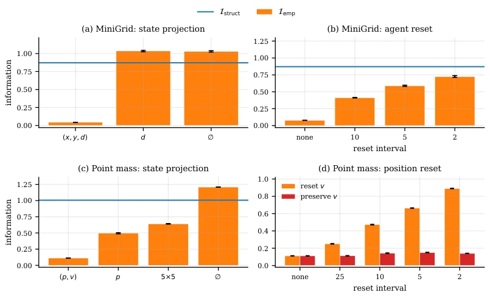
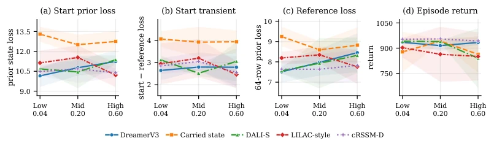

Considering Context: When World Models Need Context Encoders
Oleg Smirnov, Sofiane Ennadir, John Pertoft, Bjartur Hjaltason, Sara Karimi abspdf
论文点评Review
这篇论文堪称 RL 界的“劝退指南”，专治各种上下文编码器依赖症。作者没急着堆砌新架构，而是先问“真的需要吗？”通过定义“预测充分性”和“预测剩余空间”，犀利地指出在隐式识别足够的场景下，上下文机制纯属画蛇添足。亮点在于理论框架的严谨性，把信息论和 RL 结合得挺漂亮，实验也扎实。但槽点在于，这玩意儿本质上是个“诊断工具”，告诉你什么时候该省算力，却没直接给出一个“万能上下文模块”。而且依赖智能体自身轨迹，如果智能体本身探索不足，这诊断就废了。对于追求 SOTA 的社区来说，这更像是一篇“基准测试前的 sanity check”，适合做评估而非直接提升性能，且其结论高度依赖策略分布，缺乏通用性。
This paper can be regarded as a "discouragement guide" in the RL community, specializing in treating various context encoder dependency syndromes. The authors did not rush to pile up new architectures, but first asked "Is it really needed?" By defining "Predictive Sufficiency" and "Predictive Headroom", they sharply pointed out that in scenarios where implicit identification is sufficient, context mechanisms are purely superfluous. The highlight lies in the rigor of the theoretical framework, combining information theory and RL quite beautifully, and the experiments are also solid. But the drawback is that this tool is essentially a "diagnostic tool", telling you when to save compute, but not directly providing a "universal context module". Moreover, it depends on the agent's own trajectories; if the agent itself explores insufficiently, this diagnosis is useless. For the community pursuing SOTA, this is more like a "sanity check before benchmarking", suitable for evaluation rather than direct performance improvement, and its conclusions highly depend on policy distribution, lacking universality.
研究动机Motivation
基于模型的强化学习常假设环境动力学参数（context）无法从经验恢复，需外部供给（Hallak et al., 2015; Doshi-Velez & Konidaris, 2016）。现有方法如 PEARL (Rakelly et al., 2019)、DALI (Röder et al., 2025) 试图通过编码器推断上下文。但问题在于，智能体自身的轨迹可能已隐含了上下文信息（implicit identification），导致上下文机制冗余。现有工作缺乏量化“上下文真正有用”的准则，往往盲目套用架构。本文旨在形式化这一假设，区分结构变化与预测剩余空间，避免在信息已可恢复时浪费计算资源，为上下文机制的必要性提供理论依据。特别是当访问分布导致上下文可解码时，额外机制不仅无用，还可能引入噪声。
Model-based reinforcement learning often assumes environment dynamics parameters (context) cannot be recovered from experience, requiring external supply (Hallak et al., 2015; Doshi-Velez & Konidaris, 2016). Existing methods such as PEARL (Rakelly et al., 2019), DALI (Röder et al., 2025) attempt to infer context through encoders. But the problem is that the agent's own trajectories may already implicitly contain context information (implicit identification), leading to context mechanism redundancy. Existing work lacks criteria to quantify "when context is truly useful", often blindly applying architectures. This paper aims to formalize this hypothesis, distinguishing structural changes and predictive headroom, avoiding wasting computational resources when information is already recoverable, providing a theoretical basis for the necessity of context mechanisms. Especially when access distribution leads to decodable context, extra mechanisms are not only useless but may also introduce noise.

Figure 1: Contextual variation in MiniGrid, where a hidden wind variable probabilistically displaces the agent after each move, and walls block the displacement. (a) A model trained on pooled expe- riences with different winds learns the averaged kernel, which has no net displacement and inflated spread and governs no individual episode. (b) Under the same policy the trajectories separate mid- episode, so the state alone is consistent with only one wind and identifies it implicitly, rendering contextual mechanisms partially redundant. (c) Under one and the same context, the trajectory of an agent crossing the open grid (blue) bends downwind and betrays the context, while an agent moving along the downwind border (orange) shows no drift at all, since the obstacle blocks it. What remains for
The core is the "Predictive Sufficiency" framework. First, define context MDP, distinguishing prior average prediction from access distribution-based prediction. Propose "Predictive Headroom" (Predictive Headroom, $I_{emp}$), which is the one-step prediction loss reduced by observing true context. Decompose it into "historically recoverable part" and "residual Oracle headroom". If $I_{emp}$ is close to 0, it indicates the current state already implicitly contains context, no extra encoder needed. Methodologically, fit prediction risk under different input sets (current state, history window, true context) via MLP and RNN probes, calculate information gain. The experimental part compared methods of categories such as Memoryless, Transition Window, Recurrent, Cross-episode, verifying theoretical predictions. Control access distribution by resetting state components, verifying implicit identification mechanism. Formula (7) clearly defines the contribution boundaries between history and true context.

Figure 2: Controlled diagnostics. Wind applies a sampled drift after the native action (a), whereas Resistance either commits or voids the action (b). Across perturbations (c–e), Istruct separates from predictive headroom on Wind and Point-Mass-Attractor but remains close to it on Resistance.

Figure 6: Analytical calibration environment. The hidden regime determines the rotation of the autoregressive disturbance. The physical state resets between episodes while the regime follows a Markov chain. The prior mixture averages the two conditional disturbance fields but is not a realized regime.
Validated in controllable environments such as MiniGrid (Wind/Resistance) and Point-Mass-Attractor. Compared with baselines such as DreamerV3, DALI-S, LILAC. Metrics include Predictive Headroom (Headroom), Residual Gain (Resid. gain), and Return. Found that under "Identifiable" setting, Headroom collapses, context mechanism ineffective; under "Hard" setting, Headroom persists. In non-i.i.d. settings, cross-episode mechanism shows obvious advantage when drift rate is high. Ablation shows speed reset significantly affects Headroom in continuous environments. Conclusion is that the value of context mechanism depends on information structure under access distribution, not the MDP category itself. For example, in Wind setting Headroom is only 8.8% of Istruct, proving most structural changes are unpredictable.
其他图片Other Figures

Figure 4: Point-Mass-Attractor trajectories under uniform random actions. The hidden attractor is fixed within an episode, causing visited states to become informative about context.

Figure 5: Parallel checks of state-mediated identification. State projection removes current-state information in MiniGrid (a) and Point-Mass-Attractor (c). State resets weaken context-dependent visitation in MiniGrid (b). In Point-Mass-Attractor (d), headroom rises when velocity is reset and remains near baseline when velocity is preserved. Error bars denote 95% bootstrap CIs. Where shown, blue lines are full-state structural references, not bounds after the information set or query distribution changes.

Figure 7: Drift metrics at the three rates on frozen realizations shared across methods. Lower is better in (a)–(c), higher in (d); lines are seed means and bands show sample stdev. The lowest mean startup losses shift from the context-blind baseline to the transition-window and chain-latent agents as drift increases.